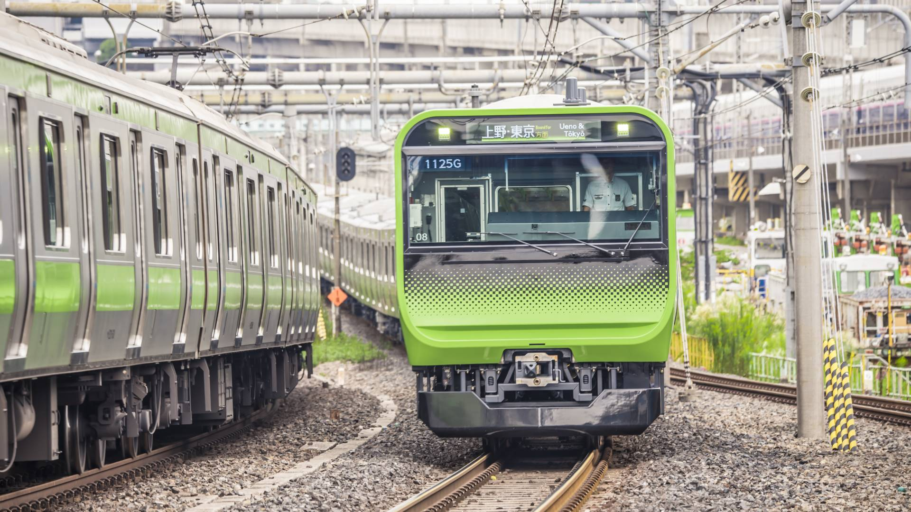
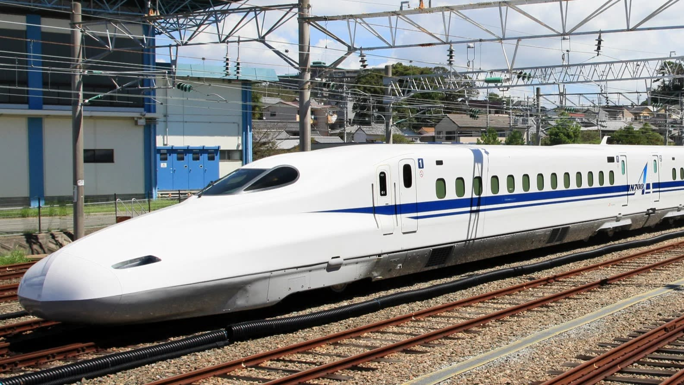
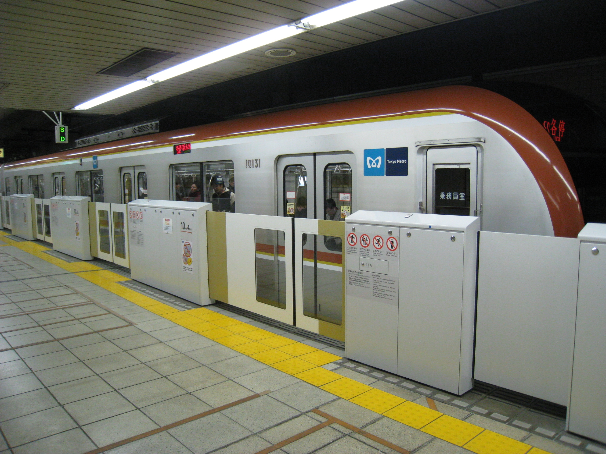

Travel info
scroll down
Transportation
With a peerless public transportation network and an increasing number of multi lingual signage, getting around Tokyo is becoming relatively stress-free. With a JR Rail Pass or travel card, you can navigate stations, hop on and off buses and even take waterbuses with ease. Traveling over ground, underground, at slow-speed or ultra-fast-speed are all options in the city. The streets are crowded with taxis—many with English signage—and a vast network of buses criss-cross the city. Central Tokyo itself is relatively small meaning renting a bicycle is a practical and fun way to navigate the city.
|

|

|

|
|
MORE ARTICLE |
||